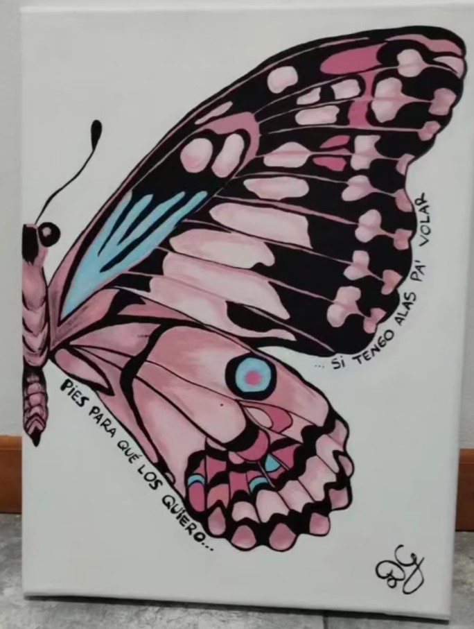
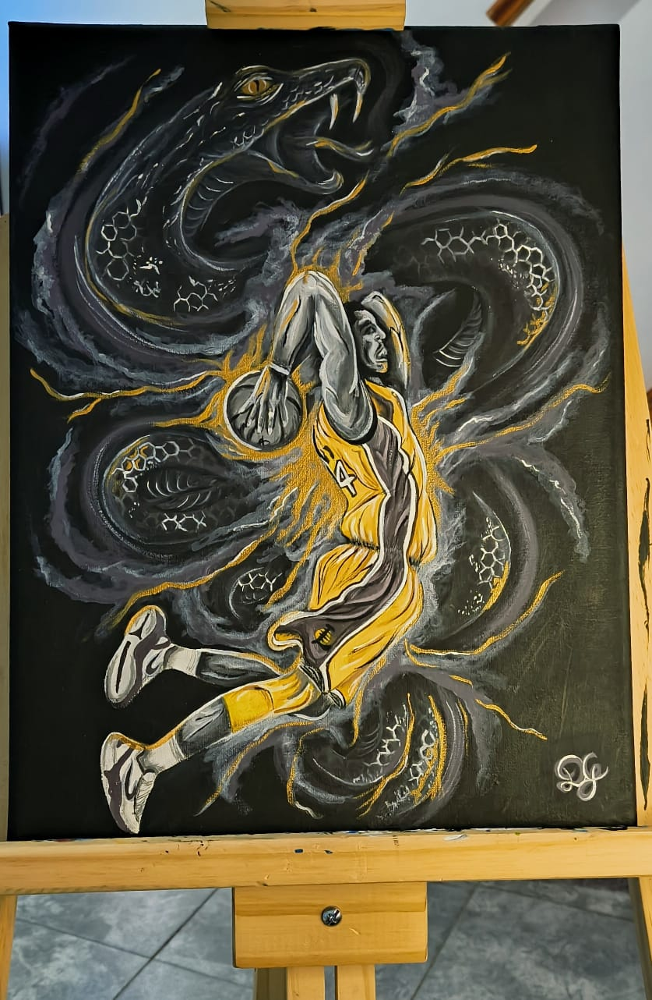

UN ESPACIO PARA EL ARTE
Pequeños universos,
creados a mano.
Pinturas y piezas de cerámica que transforman ideas, colores y emociones en objetos para disfrutar y atesorar.
✿Hecho con dedicación, pieza por pieza.

CREATIVIDAD✳EN CADA DETALLE
✧✦
UNIVERSO SAKURA — ARTE QUE CUENTA HISTORIAS
BIENVENIDOS A MI UNIVERSO ✧
Un lugar donde la imaginación toma forma, los colores encuentran su voz y cada creación tiene algo especial para contar.
01 / GALERÍA
Arte para sentir.
Obras originales,en acrilico sobre lienzo y en medidas personalizadas.





02 / VARIETE ARTISTICA
La belleza de
lo artesanal.
Texturas, formas y detalles que hacen de cada pieza algo especial. Creaciones para regalar, decorar y darle personalidad a tus espacios.
Consultar por la variete artistica ↗
03 / EL ESPÍRITU SAKURA
Detrás de cada pieza,
una historia.
Soy Dey, artista y creadora de Universo Sakura.
Creo que hay cosas que solo pueden decirse creando. Una pincelada, una línea, una palabra, una imagen.
Universo Sakura nació de esa necesidad: construir un lugar donde puedan convivir todas las formas que encuentra mi creatividad para expresarse. La pintura, el tatuaje, las palabras, los objetos, las ideas...
Sakura significa florecer. Pero no florecer porque todo haya sido fácil, sino justamente después del invierno. Porque a veces crear también es reconstruirse, cambiar de piel, transformar lo vivido y descubrir que todavía quedan colores por inventar.
Este es mi universo: imperfecto, cambiante, sensible, intenso y lleno de cositas ramdon.
Bienvenidx a Universo Sakura. 🌸
Universo Sakura ✿
✧ ✦ ✧
04 / CONSULTAS
¿Te gustaría llevar
un poco de este universo a tu vida?
Consultá por obras, piezas disponibles o encargos personalizados. ¡Será un placer conversar!
@universosakura.arte